Burcht (hoofdkwartier)
kan niet gebouwd worden
–
Hoofdkwartier en grote opslag (40 stapelplekken). Geeft gebied in een straal van 20 tegels.
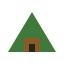
Terranahandleiding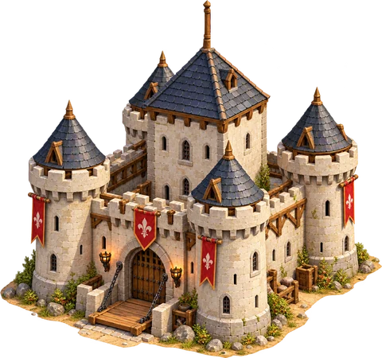
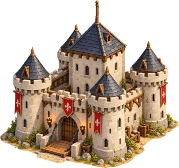
Handleiding voor vreedzame bouwers
Bijgewerkt op 1 november 2026
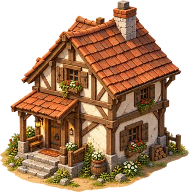
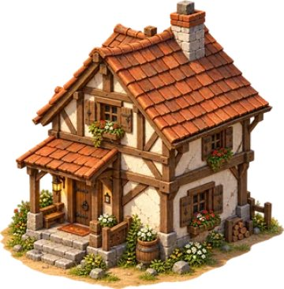
Na een lange tocht zet een klein volk zijn karren neer op een groene heuvel. Er is een bos, een beek, een paar rotsen vol steen, en verderop wonen buren die net als jij een nieuw begin zoeken. Niemand hier wil veroveren. Iedereen wil wonen, werken, eten, en het liefst een beetje plezier maken.
Dat is Terrana: een bouwspel over samenwerking, zorg en harmonie. Je begint met een burcht, een klein startdorp en 40 kolonisten. Van daaruit groeit je dorp tot een levendige gemeenschap die hout zaagt, brood bakt, gereedschap smeedt en met de buren en de natuur samenleeft.
Het grote doel deel je met iedereen op de kaart: samen leggen jullie de Tuin van Verbondenheid aan, een terrassentuin met vijvers, paviljoens en in het midden een olijfboom die door twee stenen handen wordt gedragen. Elke speler bouwt zijn eigen trap naar het midden. Is de tuin af, dan heeft iedereen gewonnen. Komt eraan

Terrana is een rustig bouw- en economiespel. Jij beslist wat er gebouwd wordt en waar; je bewoners zoeken zelf uit wie wat doet. Dragers brengen planken naar bouwplaatsen, een houthakker gaat het bos in zodra hij een bijl heeft, en een bakker begint pas te bakken als er meel en water bij zijn deur liggen. Je hoeft dus niet elke kolonist aan het handje te nemen. Je zorgt voor de juiste gebouwen op de juiste plek en kijkt hoe het dorp tot leven komt.
Je bewoners zijn harde werkers, maar geen gedachtelezers: zonder zagerij geen planken, zonder smidse geen nieuwe bijlen. Een groot deel van het plezier zit in het uitpuzzelen van zulke ketens. Daar helpt deze handleiding bij.
Terrana wordt nog gebouwd, en deze handleiding groeit mee. Om eerlijk te zijn over wat je nu al kunt doen, staat er bij alles wat nog niet in het spel zit een label Komt eraan, met een korte beschrijving van het plan.
Terrana kan je wereld nog niet bewaren. Herlaad je de pagina of sluit je het tabblad, dan begint alles opnieuw. Na de eerste minuut vraagt je browser daarom eerst of je het zeker weet. Open deze handleiding dus gerust in een eigen tabblad; dat doet de knop in het spel ook. Komt eraan
Ben je nieuw, lees dan eerst Eerste stappen: daarna kun je meteen aan de slag. De andere hoofdstukken zijn om in te grasduinen of om iets op te zoeken. Typ een woord in het zoekveld bovenaan (of druk op /) en je springt direct naar de juiste plek. In het spel opent F1 of de knop Handleiding deze pagina.
Alle getallen in de tabellen en schema's komen rechtstreeks uit het spel. Verandert er iets aan de balans, dan klopt de handleiding na de volgende update weer vanzelf. De schermafbeeldingen zijn ook echt: ze worden automatisch gemaakt in een vaste wereld met de seed vathorst.
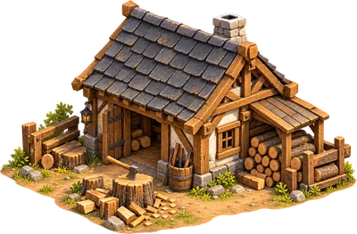
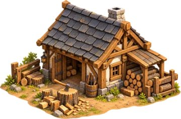
In dit hoofdstuk maak je een wereld, leer je rondkijken, zet je je eerste gebouw neer en zie je hoe hout uit het bos als planken op de bouwplaats belandt. Reken op een kwartiertje, inclusief een kop thee terwijl de zagerij draait.

Links in het spel staat de zijbalk. Bovenaan kies je hoe je wereld eruitziet:
Klik op Genereer wereld en daarna op Start. Met Pauze zet je de tijd stil (je kunt dan gewoon rondkijken en bouwopdrachten geven), en Snelheid laat de tijd 1×, 2× of 4× zo snel lopen.
| Goed | Weinig | Normaal | Veel |
|---|---|---|---|
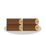 Boomstam | 8 | 16 | 32 |
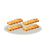 Plank | 20 | 40 | 80 |
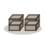 Steen | 16 | 32 | 64 |
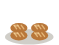 Brood | 6 | 12 | 24 |
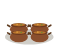 Stoofpot | 4 | 8 | 16 |
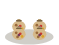 Fruit-notenmix | 4 | 8 | 16 |
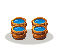 Water | 4 | 8 | 16 |
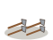 Bijl | 1 | 2 | 4 |
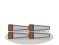 Zaag | 1 | 2 | 4 |
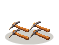 Houweel | 2 | 4 | 8 |
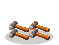 Hamer | 3 | 6 | 12 |
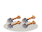 Schop | 2 | 4 | 8 |
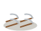 Zeis | 2 | 4 | 8 |
Je begint niet met lege handen. Rond de burcht staat al een klein dorp, en in de bergen vlakbij liggen drie mijnen klaar:
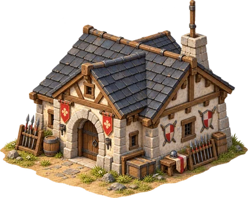
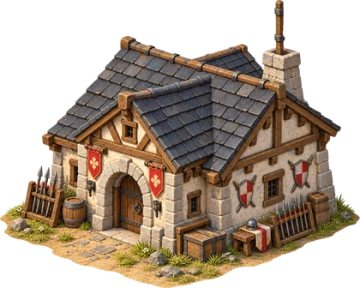
Krachthal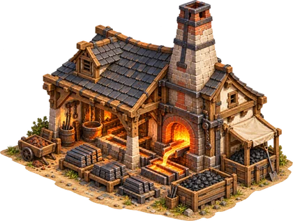
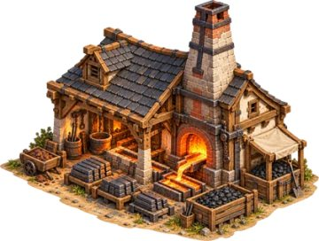
IJzersmelterij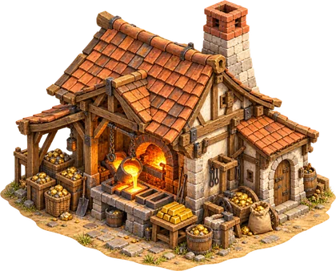
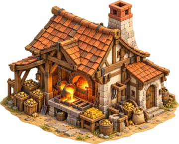
Goudsmelterij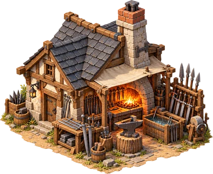
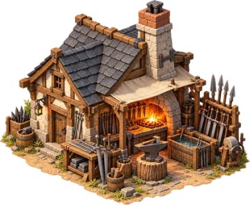
Uitrustingsmaker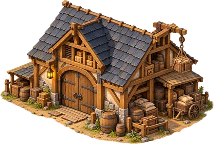
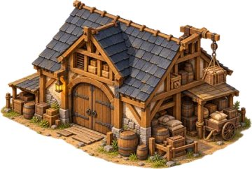
Pakhuis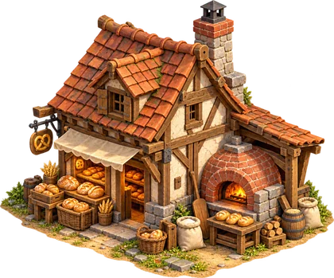
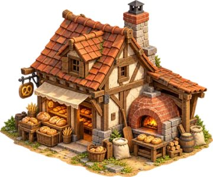
Bakkerij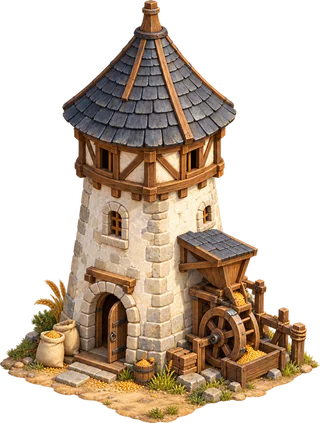
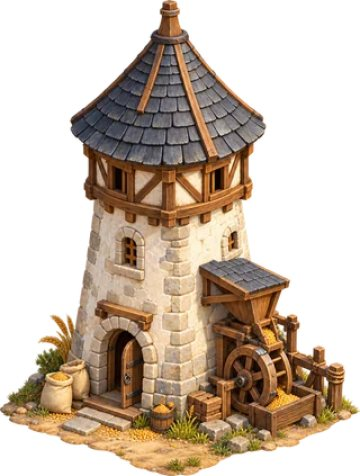
Molen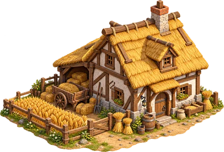
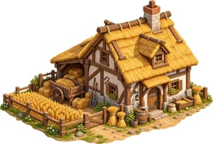
Boerderij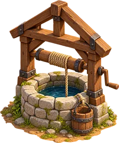
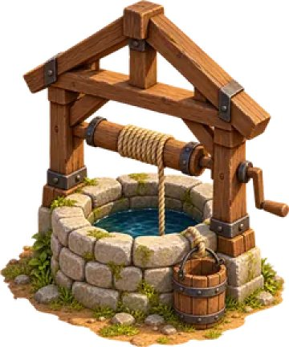
Waterput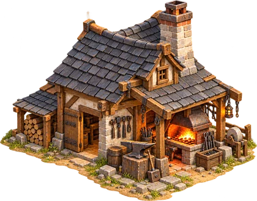
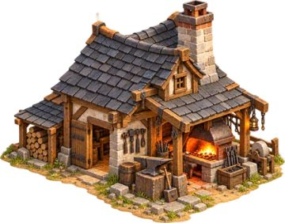
Smidse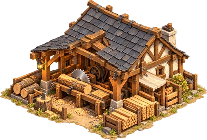
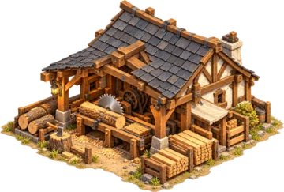
Zagerij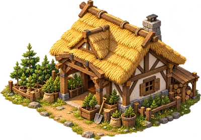
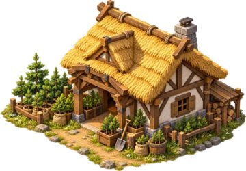
Bosbouwer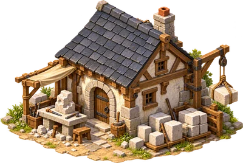
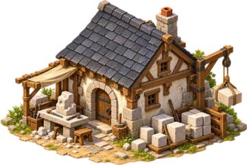
Steenhouwer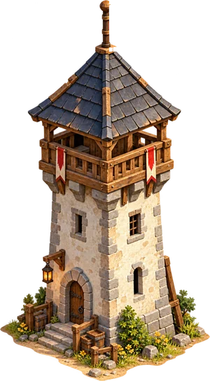
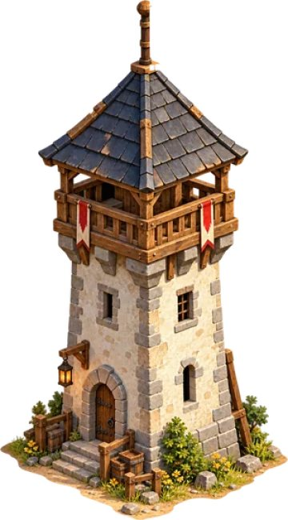
2 × Wachttoren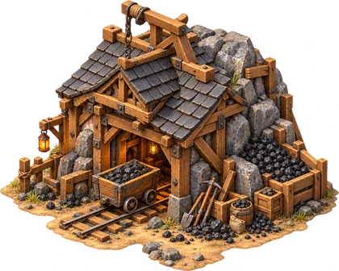
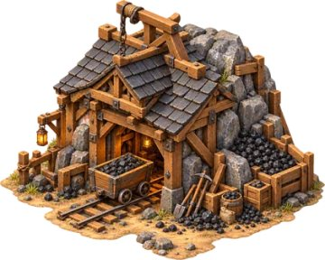
KolenmijnDe wereld is groot, dus eerst even leren lopen, of eigenlijk: zweven.
| Wat | Muis en toetsenbord | Tablet of telefoon |
|---|---|---|
| Schuiven | slepen met de linkermuisknop, of WASD en de pijltjes | slepen met één vinger |
| Zoomen | scrollwiel, of de knoppen + en − rechtsonder | knijpen met twee vingers |
| Snel ergens heen | klikken of slepen op de overzichtskaart onderaan de zijbalk | tikken op de overzichtskaart |
| Informatie | met de muis over de kaart bewegen | tikken |
Ver uitgezoomd zie je je hele streek, met kolonisten als gekleurde stipjes. Ingezoomd zie je de rook uit de schoorsteen van een bakkerij die aan het werk is, en dragers die een kist met planken sjouwen. Met het vinkje Toon ertsen in bergen komen de ertsaders in het gebergte als gekleurde stipjes tevoorschijn: zwart voor kolen, roestbruin voor ijzer en geel voor goud.
Beweeg de muis over de kaart en er verschijnt een kaartje met uitleg: wat voor grond het is, wie er staat, en bij een gebouw wat het doet, wat het nodig heeft en waar het op wacht. “Houthakker · speler 1 · wacht op een vakman” betekent bijvoorbeeld dat het gebouw klaar is, maar dat er nog niemand met een bijl in woont.

In de zijbalk staat onder Voorraad en productie alles op een rij. Productie vertelt per soort gebouw hoeveel er gemaakt is en waar het op wacht. Voorraad telt alles wat je volk bezit, ook wat dragers op dat moment in hun armen hebben. Onder Meting zie je hoeveel kolonisten er zijn en hoeveel dragers het druk hebben.
Je bewoners hoef je niet één voor één aan te sturen: ze zoeken zelf werk. Selecteren en sturen doe je alleen met krachtpatsers. Dat kan nu nog alleen in de Duel-test (zie hoofdstuk 8). Komt eraan
Boven het bouwpaneel staat Bouwen als. Nu kun je daar nog voor elke speler bouwen, handig om te proberen. Later speel jij de rode speler en worden de andere kleuren computerburen met een eigen karakter. Komt eraan
Onder Bouwen staat een knop voor elk gebouw, met de kosten in planken en stenen. Klik op een gebouw en beweeg over de kaart: een groene voetafdruk betekent dat het past, een rode dat het niet kan. Het kaartje zegt dan waarom. Een klik zet een bouwplaats neer. Met Esc of de rechtermuisknop stop je met bouwen.

Waarom iets niet past, staat in het kaartje. Dit zijn de redenen die je tegenkomt:


Er blijven altijd minstens 8 vrije dragers over die niet omgeschoold worden. Zonder dragers ligt alles stil, hoe mooi je gebouwen ook zijn. Blijft een gebouw wachten op een vakman, kijk dan of er nog gereedschap in de voorraad ligt; zie de tabel met beroepen in hoofdstuk 3.
Afbreken doe je met de knop Afbreken onder het bouwpaneel: klik daarna op een gebouw of bouwplaats. Je krijgt de helft van het verwerkte materiaal terug, naar beneden afgerond. De burcht blijft altijd staan.
Rechtsonder in beeld staat soms Milo, je adviseur. Hij kijkt met je mee en zegt het als er iets hapert: de maaltijden raken op, een bouwplaats wacht op planken die er niet meer zijn, een werkgebouw blijft leeg omdat het gereedschap op is. Gaat er iets goed, zoals je eerste brood, dan zegt hij dat ook. Aan zijn gezicht zie je wat voor advies het is: bezorgd bij een waarschuwing, nadenkend bij een tip en tevreden bij een compliment.

Onder zijn advies staan drie knoppen. Laat zien brengt je naar het gebouw of de plek waar het om gaat. Handleiding opent het stuk uit deze handleiding dat erbij hoort, in een eigen tabblad. Begrepen legt het advies weg. Hij geeft één advies tegelijk, het belangrijkste eerst, en herhaalt hetzelfde advies niet meteen weer. Na 45 seconden verdwijnt een advies vanzelf, en ook als het probleem is opgelost.
In de zijbalk kies je onder Adviseur hoeveel hij zegt: Alles, Alleen belangrijk of Uit. Met Dit niet meer tonen onder een advies zet je één soort advies uit; Alles weer tonen zet ze allemaal terug. Je browser onthoudt die keuzes.
Planken zijn het brood van de bouwer. Gelukkig heeft je startdorp al een kleine houtketen. Zo werkt hij:
Dragers brengen de boomstammen van de houthakker naar de zagerij, en de planken en stenen naar de burcht of het pakhuis. Daarvoor hoef jij niets te doen.

| Gebouw | Planken | Stenen | Wie werkt er | Wat het doet |
|---|---|---|---|---|
| Houthakker | 2 | 2 | Houthakker bijl | Hakt bomen binnen 10 tegels en maakt er boomstam van. Laat appelbomen staan voor de plukker. |
| Bosbouwer | 2 | 2 | Bosbouwer schop | Plant boompjes binnen 7 tegels; na 5 minuten zijn het volwassen bomen. |
| Zagerij | 3 | 3 | Zager zaag | Maakt van boomstam 2 × plank, in 8 seconden. |
| Steenhouwer | 2 | 2 | Steenhouwer houweel | Hakt steen uit steenblokken binnen 10 tegels. Een blok is na 8 stuks op. |
Heeft je volk 24 of meer van iets, dan stopt het gebouw dat het maakt even. Het kaartje zegt dan “genoeg boomstam op voorraad”. Zo blijven je dragers vrij voor nuttiger werk. Gaat de voorraad omlaag, dan gaat het gebouw vanzelf weer aan de slag.
Gefeliciteerd: je dorp draait. Tijd om je bewoners beter te leren kennen.
Een dorp is meer dan een verzameling daken. Het zijn mensen die sjouwen, zagen, bakken en elkaar helpen. In dit hoofdstuk leer je wie er in je dorp wonen, hoe ze aan hun werk komen en hoe je dorp groeit.
Je begint met 40 kolonisten. Wie geen vast beroep heeft, is drager. Dragers zijn het bloed van je economie: ze brengen goederen van waar ze liggen naar waar ze nodig zijn. Een drager met een kist in zijn armen is onderweg; een drager die rustig rondkuiert, wacht op werk.
Je geeft dragers geen opdrachten. Een planner kijkt een paar keer per seconde wat elk gebouw mist en stuurt de dichtstbijzijnde vrije drager naar het dichtstbijzijnde stuk dat niemand anders al komt halen. Daardoor loopt het vanzelf, maar het helpt wel als je gebouwen niet te ver uit elkaar zet. Een korte weg is een snelle weg.
Lopen gaat over gras het makkelijkst. Bossen, rotsgrond en vooral het gebergte maken een tocht langer, net als heuvel op. Vanuit de burcht lopen al voetpaden naar de gebouwen van je startdorp; daarover gaat het net wat lichter.
In Terrana zie je je voorraad gewoon liggen. Alles ligt in stapels van hoogstens 8 stuks naast de deur van een gebouw. Een werkplaats heeft 6 stapelplekken. De burcht heeft er 40 en een pakhuis 32: dat zijn je opslagplaatsen.
Staat er een nieuw werkgebouw, dan zoekt het dorp een vakman. Eerst een werkloze vakman met het juiste beroep; anders wordt een vrije drager omgeschoold. Voor de meeste beroepen haalt hij eerst het juiste gereedschap uit de voorraad. Een houthakker zonder bijl is tenslotte maar een man die naar bomen kijkt.
| Beroep | Gereedschap | Werkt in |
|---|---|---|
| Graver | Schop | bouwplaatsen (egaliseren) |
| Bouwer | Hamer | bouwplaatsen (bouwen) |
| Houthakker | Bijl | Houthakker |
| Bosbouwer | Schop | Bosbouwer |
| Zager | Zaag | Zagerij |
| Steenhouwer | Houweel | Steenhouwer |
| Mijnwerker | Houweel | Kolenmijn, IJzermijn en Goudmijn |
| Boer | Zeis | Boerderij en Bonenakker |
| Tuinier | geen | Moestuin |
| Plukker | geen | Plukkershut |
| Waterhaler | geen | Waterput |
| Kok | geen | Gaarkeuken |
| Droger | geen | Droogschuur |
| Molenaar | geen | Molen |
| Bakker | geen | Bakkerij |
| Smelter | geen | IJzersmelterij en Goudsmelterij |
| Smid | geen | Smidse en Uitrustingsmaker |
| Dierenverzorger | geen | Voederplaats |
| Krachtpatser | geen | Krachthal en Wachttoren |
Er blijven altijd 8 vrije dragers per speler over: zonder dragers ligt alles stil. Breek je een werkgebouw af, dan komt de vakman naar buiten en houdt hij zijn beroep. Bouw je later weer zo'n gebouw, dan gaat hij er meteen in.
Raakt je gereedschap op, dan blijven nieuwe gebouwen wachten op een vakman. Houd daarom een smidse aan de gang (hoofdstuk 4). Gravers en bouwers hebben een schop en een hamer nodig; die zijn er vanaf het begin, maar met veel bouwplaatsen tegelijk kun je er nooit genoeg van hebben.
Een dorp groeit door woonhuizen. Een voltooid woonhuis krijgt in de loop van de tijd tot 6 nieuwe bewoners. Elke 45 seconden komt er een bij, als er een maaltijd bij de deur ligt: brood, stoofpot of fruit-notenmix. Die maaltijd is dan op. De nieuwe bewoner begint als vrije drager.
Je startdorp heeft drie woonhuizen, samen goed voor 18 nieuwe bewoners. Wil je verder groeien, bouw er dan meer, en zorg dat er eten is (hoofdstuk 4). Het paneel Productie laat zien hoeveel bewoners er al zijn bijgekomen en hoeveel huizen op eten wachten.
Nu kost alleen een geboorte eten. Later gaan bewoners ook gewoon eten, en kun je in een school laten leren (hoofdstuk 7). Komt eraan
Bijna niets komt in één stap tot stand. Graan wordt meel, meel wordt brood, en brood geeft een mijnwerker de kracht om kolen te hakken waarmee ijzer gesmolten wordt. Zulke reeksen heten ketens. Hier vind je ze allemaal, met een schema per keten.
De houtketen en de steenhouwer zag je al in Eerste stappen. Planken en stenen zijn je bouwmaterialen; zonder die twee komt er geen enkel gebouw bij.
In Terrana eet niemand vlees of vis. Dat is geen gemis maar een keuze: de dieren in je streek zijn buren, en je volk weet heerlijk te koken met wat het land geeft. Er zijn drie maaltijden. Elk is goed voor een nieuwe bewoner, en elke mijnwerker heeft er een als lievelingskost.
De boer zaait graan op de akkers rond zijn boerderij en oogst het na 3 minuten. De molen maalt er meel van, de waterput haalt water, en de bakker bakt van meel en water 2 broden. Je startdorp heeft deze hele keten al.
Op de bonenakker groeien peulvruchten (rijp na 2,5 minuten), in de moestuin groente (na 2 minuten). De gaarkeuken maakt van peulvruchten, groente en water 2 pannen stoofpot. Bonenakker en moestuin hebben weinig ruimte nodig: hun akkers liggen binnen 4 tegels.
De plukker zoekt binnen 9 tegels appelbomen en bessenstruiken voor fruit en hazelaars voor noten, om en om. Een geplukte boom of struik draagt na 2,5 minuten weer vruchten. In de droogschuur worden fruit en noten tot 2 zakjes fruit-notenmix. Zet de plukkershut dus in een bos met veel struiken.
| Gebouw | Planken | Stenen | Wie werkt er | Wat het doet |
|---|---|---|---|---|
| Boerderij | 3 | 3 | Boer zeis | Zaait en oogst graan op akkers binnen 6 tegels (rijp na 3 minuten). |
| Molen | 3 | 3 | Molenaar | Maakt van graan meel, in 6 seconden. |
| Waterput | 1 | 2 | Waterhaler | Maakt water, elke 7 seconden. |
| Bakkerij | 3 | 3 | Bakker | Maakt van meel en water 2 × brood, in 10 seconden. |
| Bonenakker | 2 | 1 | Boer zeis | Zaait en oogst peulvruchten op akkers binnen 4 tegels (rijp na 2,5 minuten). |
| Moestuin | 2 | 1 | Tuinier | Zaait en oogst groente op akkers binnen 4 tegels (rijp na 2 minuten). |
| Gaarkeuken | 3 | 3 | Kok | Maakt van peulvruchten, groente en water 2 × stoofpot, in 10 seconden. |
| Plukkershut | 2 | 1 | Plukker | Plukt fruit en noten van bomen en struiken binnen 9 tegels. |
| Droogschuur | 3 | 1 | Droger | Maakt van fruit en noten 2 × fruit-notenmix, in 10 seconden. |
Een waterput mag op elke plek met gras, ook ver van een meer: hij haalt grondwater omhoog. Hij maakt elke 7 seconden een emmer water. Een bakkerij die doorwerkt, gebruikt er elke 10 seconden één, en een gaarkeuken ook. Voor een bakkerij is één put dus ruim genoeg; draaien bakkerij en gaarkeuken allebei volop, zet er dan een tweede put bij.
In de bergen zitten ertsaders: kolen, ijzer en goud. Zet het vinkje Toon ertsen in bergen aan om ze te zien. Een mijn staat op rotsgrond of gebergte en haalt erts uit de ader binnen 3 tegels. Elke ertstegel bevat 20 stuks; is een ader leeg, dan meldt de mijn “geen ijzer meer in de buurt” en is het tijd voor een nieuwe plek.

Mijnwerk maakt hongerig. Een mijnwerker eet elke maaltijd, maar met zijn lievelingskost werkt hij dubbel zo lang door:
| Mijn | Lievelingskost | Ook goed |
|---|---|---|
| Kolenmijn | Brood (2 rondes) | Stoofpot, Fruit-notenmix (1 ronde) |
| IJzermijn | Stoofpot (2 rondes) | Brood, Fruit-notenmix (1 ronde) |
| Goudmijn | Fruit-notenmix (2 rondes) | Brood, Stoofpot (1 ronde) |
Je startdorp bakt alleen brood, dus in het begin draaien de ijzer- en goudmijn op brood. Bouw je een gaarkeuken en een droogschuur, dan halen ze met hetzelfde eten twee keer zoveel erts naar boven.
Smidse en uitrustingsmaker maken vanzelf wat je het minst hebt. Wil je iets anders, kies dan in het paneel Productie bij maakt een vast product. Dat geldt voor al die gebouwen van je volk tegelijk.
| Gebouw | Planken | Stenen | Wie werkt er | Wat het doet |
|---|---|---|---|---|
| Kolenmijn | 3 | 1 | Mijnwerker houweel | Haalt kolen uit de berg (binnen 3 tegels). De mijnwerker eet elke maaltijd, maar met zijn lievelingskost, brood, werkt hij 2 keer zo lang door. |
| IJzermijn | 3 | 1 | Mijnwerker houweel | Haalt ijzererts uit de berg (binnen 3 tegels). De mijnwerker eet elke maaltijd, maar met zijn lievelingskost, stoofpot, werkt hij 2 keer zo lang door. |
| Goudmijn | 3 | 1 | Mijnwerker houweel | Haalt gouderts uit de berg (binnen 3 tegels). De mijnwerker eet elke maaltijd, maar met zijn lievelingskost, fruit-notenmix, werkt hij 2 keer zo lang door. |
| IJzersmelterij | 4 | 5 | Smelter | Maakt van ijzererts en kolen ijzer, in 12 seconden. |
| Goudsmelterij | 4 | 5 | Smelter | Maakt van gouderts en kolen goud, in 12 seconden. |
| Smidse | 4 | 5 | Smid | Maakt bijl, zaag, houweel, hamer, schop en zeis, telkens in 15 seconden. |
| Uitrustingsmaker | 4 | 5 | Smid | Maakt helm, schild en polsband, telkens in 15 seconden. |
Het kaartje van een gebouw zegt altijd waarom het niets doet. De meest voorkomende:
Je dorp leeft van het land, en het land leeft mee. Bossen groeien terug, akkers rijpen, struiken dragen opnieuw vrucht, en tussen dat alles lopen de dieren hun eigen weg.
Een houthakker laat een stronk achter. Na 3,3 minuten is die vergaan en kan er weer iets groeien. De bosbouwer plant boompjes op vrije plekken binnen 7 tegels, maar nooit te dicht op elkaar: staan er al 2 bomen direct naast een plek, dan slaat hij die over. Na 5 minuten is een boompje een volwassen boom. Houthakker en bosbouwer samen houden een bos eindeloos op peil.
Herten grazen aan de bosrand, konijnen huppelen rond, eenden dobberen op het water, en af en toe sluipt er een vos voorbij. Ze doen niemand kwaad en niemand doet hun kwaad. Hoeveel er zijn, hangt af van de grootte van je wereld:
| Dier | Waar | Hoogstens |
|---|---|---|
| Hert | op land, tussen bos en weide | 260 |
| Konijn | op land, tussen bos en weide | 400 |
| Eend | op het water | 260 |
| Vos | op land, tussen bos en weide | 90 |
| Vogel | op land, tussen bos en weide | 200 |
Bouw een voederplaats: een dierenverzorger vult de bak er met graan van je boerderij. Zet er een dierenweide naast, binnen 8 tegels, en er komen dieren bij: elke 3 minuten een jong, tot er 6 rond de wei leven. Dat maakt je volk gelukkiger (zie Harmonie). Een voederplaats die lang leeg blijft, doet juist pijn.
Harmonie is hoe goed je volk zich voelt in zijn streek. Het is een meter van 0 tot 100, die je ziet bovenaan het paneel Productie. Een volk in harmonie groeit sneller, oogst eerder en is sterker als het op armpje drukken aankomt.
Je begint op 50. Wat je doet, zet een doel: 50 plus alles wat helpt, min alles wat pijn doet. De meter schuift daar rustig naartoe, elke 5 seconden één punt, dus een goede daad zie je niet meteen en een misstap ook niet. In het paneel zie je de balk met een streepje voor het doel, en per bron wat die bijdraagt.

| Gebouw | Planken | Stenen | Wie werkt er | Wat het doet |
|---|---|---|---|---|
| Voederplaats | 2 | 1 | Dierenverzorger | |
| Dierenweide | 3 | 0 | – | |
| Bloemenweide | 1 | 0 | – |
Later komen er een school en samen mediteren bij het hunnebed bij (hoofdstuk 7). Komt eraan
Bij 50 is alles gewoon. Daarboven gaat het beter, daaronder slechter, tot de volgende waarden bij 100 of 0:
Zakt de harmonie onder 35, dan waarschuwt de adviseur je. Komt hij boven 75, dan krijg je een compliment.
Twee bijzondere plekken maken je dorp wijzer en rustiger. Ze staan in het ontwerp en komen in een volgende versie.
In de school geeft een leraar les. Per school stel je in:
Leerlingen eten wel maar werken niet. Daarna werken ze sneller in hun vak, worden helers en muzikanten beter, en een meester draagt het meest bij aan de harmonie.
Een hunnebed is een bouwwerk van grote stenen, op een rustige plek ver van lawaaiige werkplaatsen als de smidse, de zagerij en de mijnen. Af en toe komen vrije bewoners er in een kring zitten om samen te mediteren. Dieren uit de buurt komen erbij liggen, zeker als er gevulde voederbakken in de buurt staan. Zolang de meditatie duurt, stijgt de harmonie, meer naarmate er meer mensen en dieren meedoen. Je stelt zelf in hoeveel tijd je bewoners daaraan mogen besteden.
Ook in een vreedzame wereld zijn er weleens meningsverschillen: over een grens, of gewoon over wie de sterkste is op het feest. Die worden beslecht met armpje drukken. Wie verliest, rust even uit en doet daarna weer mee. Er valt niemand.
Krachtpatsers komen uit de krachthal. Die haalt zelf vrije dragers binnen en leidt ze op: na 40 seconden is een rekruut een junior. De hal houdt een reserve aan van 2 krachtpatsers; dat aantal kies je in het paneel Productie (0, 2, 4 of 8). Er blijven altijd 8 vrije dragers over voor het sjouwen.
Met uitrusting trainen ze een niveau hoger, telkens in 60 seconden. Een junior wordt medior met een helm, een medior wordt senior met een schild en een polsband. Dragers brengen die van de uitrustingsmaker naar de hal, en de krachtpatser houdt ze daarna. De hal traint één krachtpatser tegelijk.
Helers en muzikanten kun je nu alleen nog proberen in de modus Duel-test (knop in de zijbalk), net als het armpje drukken zelf. Komt eraan
| Niveau | Krachtpatser | Muzikant | Heler |
|---|---|---|---|
| 1 · junior | kale helm | vilten muts, fluit | kap |
| 2 · medior | helm met messing punt | muts met speld, harp | kap met voorhoofdsring |
| 3 · senior | helm met kam in je kleur | grote veer, doedelzak | bladerkrans met lint in je kleur |
Een medior is 45% sterker dan een junior, een senior 100%. Boven een geselecteerde eenheid zie je een capsule in zijn gezondheidskleur, met één tot drie koperen stipjes voor zijn niveau.

Selecteer je krachtpatsers en klik met de rechtermuisknop op een krachtpatser van een andere kleur. De sterkste van jouw selectie neemt de uitdaging aan. Ze lopen naar een tafeltje tussen hen in, gaan zitten en beginnen te drukken. Het krachtbalkje boven de tafel kleurt in beider kleuren en schuift mee met de stand.
Wie wint, hangt af van:
Bij bijna gelijke kracht is het spannend en duurt een duel zo'n twintig seconden. Is de een duidelijk sterker, dan is het snel beslist. Na 60 seconden wint wie voorstaat.
De verliezer loopt wat doorschijnend en langzamer naar de dichtstbijzijnde heler van zijn kleur (zonder heler: naar de burcht) en rust daar 30 seconden uit. Daarna doet hij weer mee, al is hij nog wat moe. Een heler trekt gewoon mee met zijn groep.
Een muzikant speelt zijn krachtpatsers moed in. Hoe hoger zijn niveau, hoe verder zijn muziek draagt: met de fluit 3 tegels, met de harp 5, met de doedelzak 8. Twee muzikanten maken niet dubbel zo sterk. Selecteer je een muzikant, dan zie je zijn bereik als stippellijn.
Je gebied komt van bemande gebouwen. De burcht geeft een straal van 20 tegels, en elke bemande wachttoren 13. Een toren telt pas als er een krachtpatser in woont; tot dan geeft hij nog geen land. Binnen je grens mag je bouwen. Je ziet de grens als stippellijn in je kleur, ook op de overzichtskaart.

Een wachttoren heeft plaats voor 2 krachtpatsers. Is hij af, dan komt de dichtstbijzijnde krachtpatser er vanzelf in wonen: een die buiten rondloopt, of een uit de reserve van een krachthal. Zonder krachthal blijft een nieuwe toren dus leeg. De torens van je startdorp hebben meteen elk 1 junior. Breek je een toren af, dan lopen zijn krachtpatsers naar een krachthal met plek, of naar de volgende toren die er een nodig heeft. Straks kan een buur je toren uitdagen; wie hem met armpje drukken wint, neemt hem over. Komt eraan
In de Duel-test sla je een selectie op met Ctrl+1 tot 9 (of Alt, omdat sommige browsers Ctrl+cijfer voor tabbladen gebruiken). Met 1 tot 9 kies je de groep weer; twee keer snel achter elkaar en de camera gaat erheen.
Je bent niet alleen. Rondom wonen andere volken, elk met een eigen karakter. Je speelt Terrana alleen, tegen de computer, maar je buren voelen allesbehalve als machines. Dit hoofdstuk beschrijft het ontwerp.
Op de marktplaats woont een handelaar die met een handkar over land of met een bootje over het water naar je buren gaat. In het ruilvenster zet je je aanbod tegenover je vraag. Wat schaars is, is meer waard. Met de kaartinstelling onderlinge afhankelijkheid heeft niet iedere speler alles: de een zit op steen, de ander op ijzer of vruchtbare grond. Dan is handelen geen keuze maar een noodzaak, en dat is precies de bedoeling.
Je band met een buur groeit van onbekend via kennis en vriend naar bondgenoot. Dat gaat door te handelen, geschenken te geven, samen te mediteren bij het hunnebed en samen feest te vieren, met een vriendschappelijk toernooi armpje drukken. Sluit je vrede, dan liggen de grenzen vast. Een slechte band betekent een slechtere ruil, of helemaal geen.
Tussen alle startplekken in ligt een stuk neutraal land dat van niemand is. Daar leggen alle volken samen de Tuin van Verbondenheid aan: het grote doel van Terrana.
Een rond terrassenplein met vijvers, watervallen en paviljoens. In het midden draagt een paar stenen handen een oude olijfboom. Vier brede trappen leiden naar het hart van de tuin, elk in de kleur van een volk. Iedere speler bouwt zijn eigen trap en zijn eigen kwart, zodat je op de kaart ziet wie wat heeft bijgedragen.
De tuin groeit in fasen, ongeveer zo: fundering en terrassen, trappen en vijvers, paviljoens, en als laatste de beplanting en de olijfboom. Elke fase vraagt een eigen mix van goederen. Dragers brengen ze erheen zoals naar een gewone bouwplaats, en bij elke fase zie je wat iedere speler heeft gebracht.
Is de tuin af, dan heeft iedereen gewonnen. Geen enkel volk kan het alleen, want de grondstoffen zijn over de kaart verspreid. Je computerburen dragen bij naar vermogen en naar karakter: de een gul, de ander pas als jij het goede voorbeeld geeft.
Liever zonder einddoel? In de modus vrij spel bouw je gewoon zo lang en zo mooi als je wilt.
Elke wereld in Terrana wordt ter plekke gemaakt, uit een naam: de seed. Dezelfde seed met dezelfde instellingen geeft altijd precies dezelfde wereld.

| Instelling | Wat het doet |
|---|---|
| Seed | De naam van de wereld. De dobbelsteen kiest een willekeurige. |
| Grootte | 128, 192, 256, 320 of 384 tegels in het vierkant. Groter is meer ruimte, maar ook langere wegen. |
| Landvorm | Continent: één groot land. Eilanden: losse eilanden. Binnenland met meren: veel land met water ertussen. |
| Spelers | 2 tot 8 startplekken, elk met een eigen startdorp en kleur. |
| Waterniveau | Hoeveel van de wereld onder water ligt. |
| Gebergte | Hoeveel bergen er zijn, en dus hoeveel steen en erts. |
| Bosdichtheid | Hoeveel bos er groeit. |
| Startvoorraad | Weinig, normaal of veel in de burcht (zie Eerste stappen). |
Het terrein bestaat uit diep en ondiep water, strand, gras, weelderig gras, droog gras, rotsgrond, gebergte en sneeuw. Gebouwen staan op gras, mijnen op rots en gebergte. Ertsaders liggen in de bergen; met het vinkje Toon ertsen in bergen zie je ze.
| Toets of muis | Wat het doet |
|---|---|
| slepen met de linkermuisknop | de kaart schuiven |
| WASD of de pijltjes | de kaart schuiven |
| scrollwiel, + en − rechtsonder | zoomen |
| klikken op de overzichtskaart | daarheen springen |
| muis over de kaart | informatie over tegel, gebouw of stapel |
| F1 | deze handleiding (in een nieuw tabblad) |
| Toets of muis | Wat het doet |
|---|---|
| klik op een gebouw in het paneel Bouwen | bouwmodus voor dat gebouw |
| klik op de kaart | bouwplaats neerzetten (of afbreken in de afbreekmodus) |
| Esc of de rechtermuisknop | stoppen met bouwen of afbreken |
| Toets of muis | Wat het doet |
|---|---|
| klikken / slepen met de linkermuisknop | één eenheid / een rechthoek selecteren |
| Shift+klik | alle eigen krachtpatsers van dat niveau in beeld |
| rechtsklik op een andere kleur | uitdagen tot armpje drukken |
| rechtsklik op de grond | erheen lopen, in opstelling |
| rechts slepen | de kaart schuiven |
| Ctrl/Alt+1…9 | selectie opslaan als groep |
| 1…9, twee keer snel | groep kiezen, en de camera erheen |
/ springt naar het zoekveld, ↑ en ↓ lopen door de treffers en Enter opent er een.
Eén vinger schuift, twee vingers zoomen en een tik geeft informatie. In de bouwmodus bekijkt de eerste tik de plek en bouwt een tweede tik op dezelfde plek. In de Duel-test selecteert een tik een eenheid, en tik je daarna op een andere kleur of op de grond om uit te dagen of te lopen. Vasthouden en slepen trekt een rechthoek.
Elk gebouw met zijn plaatje, de bouwkosten in planken en stenen, wie er werkt en wat het doet. Deze bijlage komt rechtstreeks uit het spel.
kan niet gebouwd worden
–
Hoofdkwartier en grote opslag (40 stapelplekken). Geeft gebied in een straal van 20 tegels.
2 3
bewoners
Krijgt tot 6 nieuwe bewoners, elk voor één maaltijd: brood, stoofpot of fruit-notenmix.
2 2
Houthakker bijl
Hakt bomen binnen 10 tegels en maakt er boomstam van. Laat appelbomen staan voor de plukker.
2 2
Bosbouwer schop
Plant boompjes binnen 7 tegels; na 5 minuten zijn het volwassen bomen.
3 3
Zager zaag
Maakt van boomstam 2 × plank, in 8 seconden.
2 2
Steenhouwer houweel
Hakt steen uit steenblokken binnen 10 tegels. Een blok is na 8 stuks op.
3 3
–
Extra opslag met 32 stapelplekken, handig ver van de burcht.
4 5
Krachtpatser
Leidt vrije dragers op tot krachtpatser en traint ze met uitrusting een niveau hoger. Houdt een reserve aan voor je torens.
2 3
Krachtpatser
Geeft gebied in een straal van 13 tegels, zolang er een krachtpatser in woont (plaats voor 2).
3 3
Bakker
Maakt van meel en water 2 × brood, in 10 seconden.
4 5
Smid
Maakt bijl, zaag, houweel, hamer, schop en zeis, telkens in 15 seconden.
3 3
Molenaar
Maakt van graan meel, in 6 seconden.
3 1
Mijnwerker houweel
Haalt kolen uit de berg (binnen 3 tegels). De mijnwerker eet elke maaltijd, maar met zijn lievelingskost, brood, werkt hij 2 keer zo lang door.
3 1
Mijnwerker houweel
Haalt ijzererts uit de berg (binnen 3 tegels). De mijnwerker eet elke maaltijd, maar met zijn lievelingskost, stoofpot, werkt hij 2 keer zo lang door.
3 1
Mijnwerker houweel
Haalt gouderts uit de berg (binnen 3 tegels). De mijnwerker eet elke maaltijd, maar met zijn lievelingskost, fruit-notenmix, werkt hij 2 keer zo lang door.
4 5
Smelter
Maakt van ijzererts en kolen ijzer, in 12 seconden.
4 5
Smelter
Maakt van gouderts en kolen goud, in 12 seconden.
4 5
Smid
Maakt helm, schild en polsband, telkens in 15 seconden.
3 3
Boer zeis
Zaait en oogst graan op akkers binnen 6 tegels (rijp na 3 minuten).
2 1
Boer zeis
Zaait en oogst peulvruchten op akkers binnen 4 tegels (rijp na 2,5 minuten).
2 1
Tuinier
Zaait en oogst groente op akkers binnen 4 tegels (rijp na 2 minuten).
2 1
Plukker
Plukt fruit en noten van bomen en struiken binnen 9 tegels.
1 2
Waterhaler
Maakt water, elke 7 seconden.
3 3
Kok
Maakt van peulvruchten, groente en water 2 × stoofpot, in 10 seconden.
3 1
Droger
Maakt van fruit en noten 2 × fruit-notenmix, in 10 seconden.
2 1
Dierenverzorger
1 0
–
3 0
–
Alles wat je volk kan maken, dragen en gebruiken, met wie het maakt en waarvoor het nodig is.
| Goed | Gemaakt door | Nodig voor |
|---|---|---|
| Boomstam | Houthakker | Zagerij |
| Plank | Zagerij | Smidse, Uitrustingsmaker en bouwen |
| Steen | Steenhouwer | bouwen |
| Goed | Gemaakt door | Nodig voor |
|---|---|---|
| Graan | Boerderij | Molen |
| Meel | Molen | Bakkerij |
| Brood | Bakkerij | Woonhuis, Kolenmijn (lievelingskost), IJzermijn en Goudmijn |
| Water | Waterput | Bakkerij en Gaarkeuken |
| Peulvruchten | Bonenakker | Gaarkeuken |
| Groente | Moestuin | Gaarkeuken |
| Fruit | Plukkershut | Droogschuur |
| Noten | Plukkershut | Droogschuur |
| Stoofpot | Gaarkeuken | Woonhuis, Kolenmijn, IJzermijn (lievelingskost) en Goudmijn |
| Fruit-notenmix | Droogschuur | Woonhuis, Kolenmijn, IJzermijn en Goudmijn (lievelingskost) |
| Goed | Gemaakt door | Nodig voor |
|---|---|---|
| Kolen | Kolenmijn | IJzersmelterij en Goudsmelterij |
| IJzererts | IJzermijn | IJzersmelterij |
| Gouderts | Goudmijn | Goudsmelterij |
| Goed | Gemaakt door | Nodig voor |
|---|---|---|
| IJzer | IJzersmelterij | Smidse en Uitrustingsmaker |
| Goud | Goudsmelterij | Uitrustingsmaker |
| Goed | Gemaakt door | Nodig voor |
|---|---|---|
| Bijl | Smidse | gereedschap van de houthakker |
| Zaag | Smidse | gereedschap van de zager |
| Houweel | Smidse | gereedschap van de steenhouwer en gereedschap van de mijnwerker |
| Hamer | Smidse | gereedschap van de bouwer |
| Schop | Smidse | gereedschap van de graver en gereedschap van de bosbouwer |
| Zeis | Smidse | gereedschap van de boer |
| Goed | Gemaakt door | Nodig voor |
|---|---|---|
| Helm | Uitrustingsmaker | krachthal (een niveau hoger) |
| Schild | Uitrustingsmaker | krachthal (een niveau hoger) |
| Polsband | Uitrustingsmaker | krachthal (een niveau hoger) |